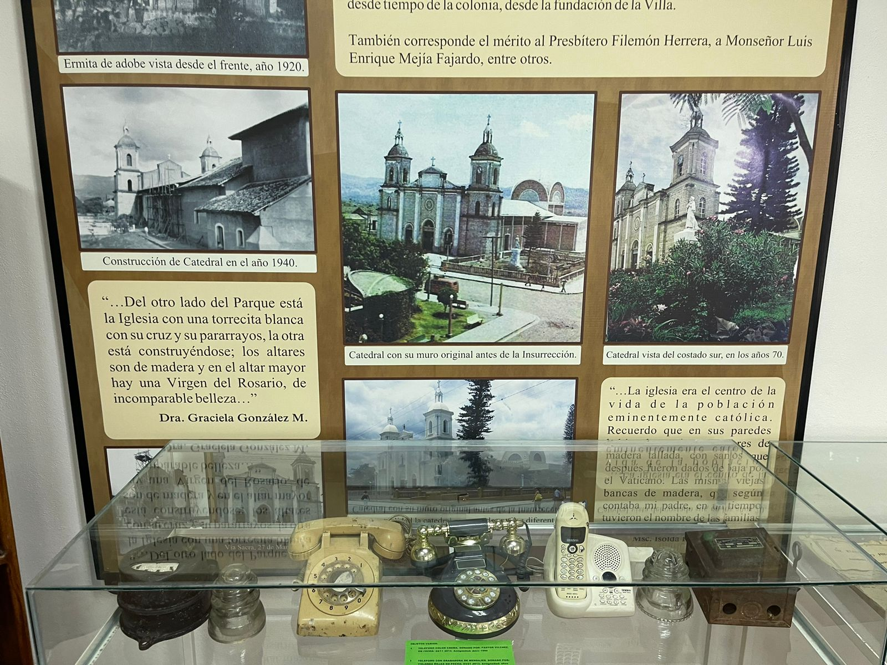

El Museo
1¿Por qué visitar el museo?
El Museo de Estelí ofrece una visión fascinante de la historia y cultura de la región. Podrás aprender sobre los antiguos habitantes de la zona, como los indígenas y sus tradiciones, así como también sobre la historia más reciente, incluyendo el papel de Estelí en la revolución sandinista.
2¿Que ofrece el museo?
El museo contiene objetos ricos en historia, si te interesa la arqueología, el museo exhibe objetos y artefactos arqueológicos descubiertos en la región. Podrás explorar la rica historia precolombina de Estelí a través de estas piezas.
Servicios
Esculturas en honor
Historia Nicaraguense

Buena localización

Lugar tranquilo

Sitios de comida cercanos

Juegos para niños
Patrimonio

Buena experiencia